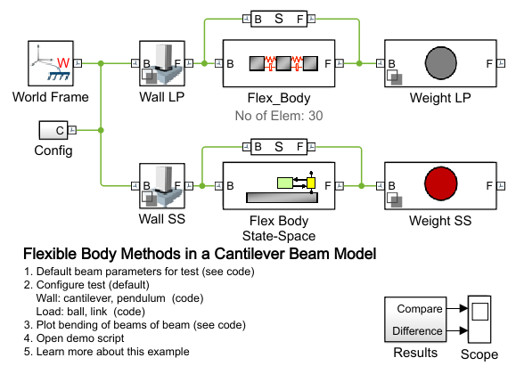
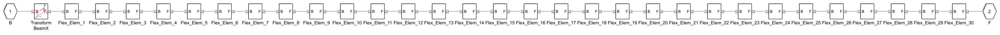
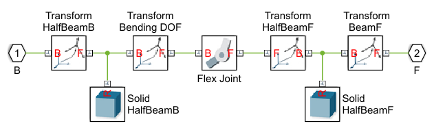
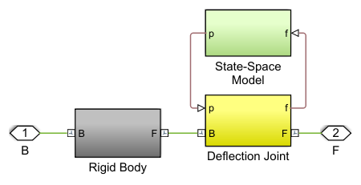
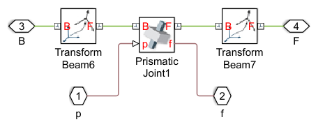
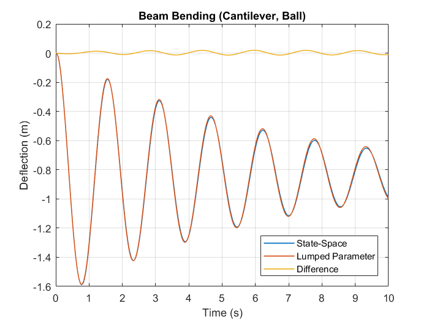
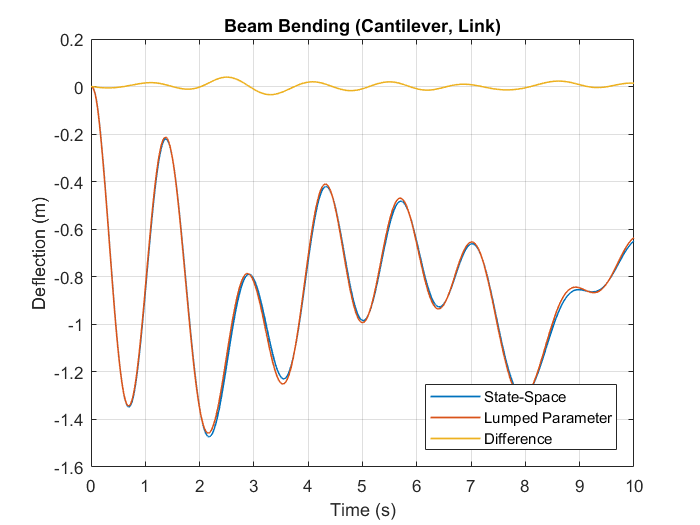
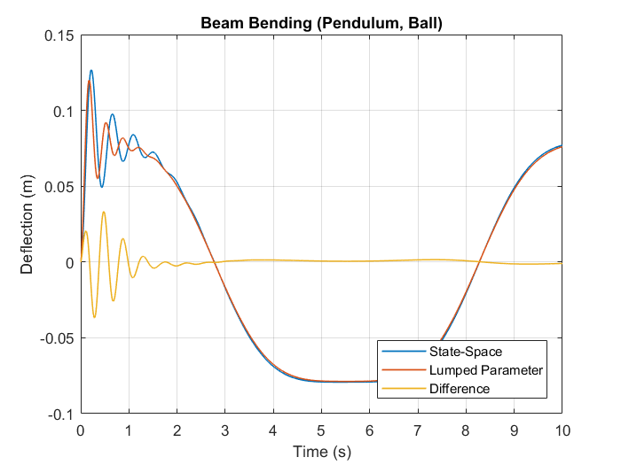
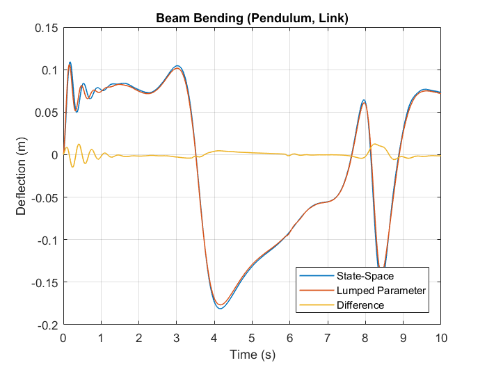

Flexible Body Methods in a Cantilever Beam Model
This example shows two methods for modeling a flexible body. The lumped parameter method uses a chain of masses connected by springs to approximate a flexible body. The other method superimposes the deflection predicted by a modal model of the flexible element onto rigid body motion.
A flexible beam is modeled using both of these methods. The connection to the wall and the loading can be configured to subject the beam to different conditions and compare the behavior.
Contents
Model
Flex_Body Subsystem (Lumped Parameter Method)
The chain of flexible elements is automatically constructed using MATLAB commands. The subsystem mask permits the user to specify the number of elements, material properties, and beam cross section. The degrees of freedom for the flexible body can also be selected in the mask. The body "Flex Joint" within the element can be replaced by another Simscape Multibody block that has the desired degrees of freedom.
 Flex Body State-Space Subsystem (Superposition via Modal Model)
The state-space method superimposes the deflection of the flexible body on rigid body motion. The deflection is calculated by a modal model which is can be exported from a finite element program. In this model, a joint is attached to the end of the beam so that the attachment point for the next body is shifted by the amount of the deflection.
 Simulation Results from Simscape Logging
Test beams with one fixed end, weight rigidly attached to free end
Test beams with one fixed end, pendulum link attached to free end
Test beams with one pinned end, weight rigidly attached to free end
Test beams with one pinned end, pendulum link attached to free end
